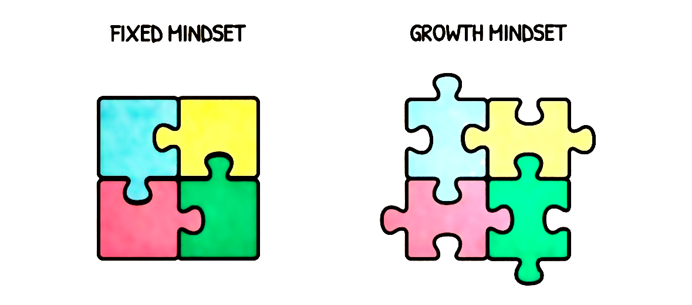
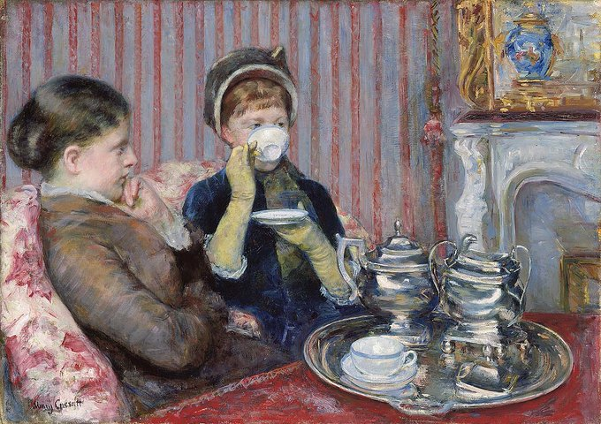
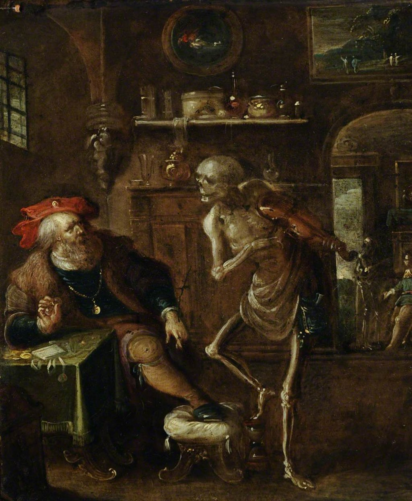
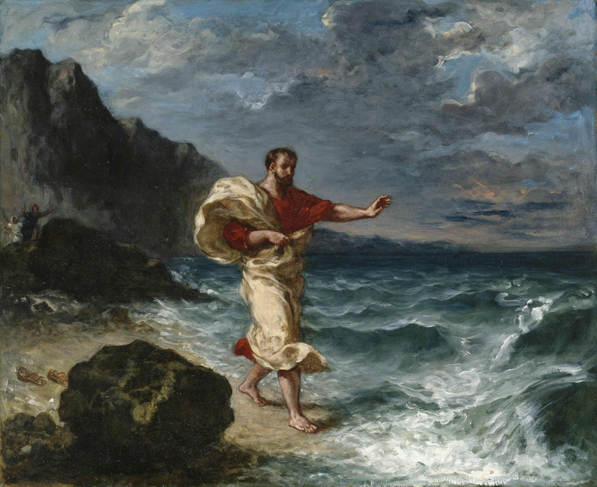
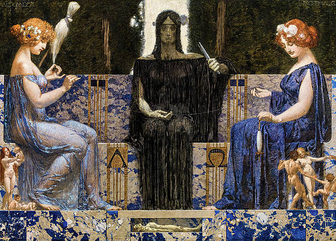

Resolves to an Imperiled Perception
“If the doors of perception were cleansed every thing would appear to man as it is, Infinite. For man has closed himself up, till he sees all things thro’ narrow chinks of his cavern.”
~ William Blake, The Marriage of Heaven and Hell
In his allegory of the cave, Plato thought that all the things we experience are like imperfect shadows. Real, perfect forms cast the shadows, but we are afraid to turn around and look at them. We are satisfied, living in a cozy world of shadows, and don’t like to think about what may lie beyond them. Thus, “Know thyself” is a philosophical maxim which was inscribed upon the Temple of Apollo in the ancient Greek precinct of Delphi. When you change the way you look at things, the things you look at change. To have but not want, to enjoy without needing. The true spiritual secret is having everything—the world, its joys and trials—yet owning nothing, so that nothing can claim you.
It’s not things that upset us, it’s our judgment about things. Our opinions determine the reality we experience. It’s not what you look at that matters, it’s what you see. The brain is everything what you think you become. For the situations and things beyond our control, we are to responsibly deal with endurance and equanimity. Don’t compare yourself to others; compare yourself to where you used to be. Acknowledge that there is a constant tension between self-improvement and self-acceptance. Comparison is the thief of joy.
Warped views of reality are highly problematic because their inaccuracies of reality can result in feelings of hopelessness that can be compounded and lead to anxiety and depression. You exaggerate the problem, assuming that a single failure is permanent and reveals deep, irreparable flaws in your character. Anxiety and despair arise as you confront the thought that you are a total failure. This may sound extreme, but we often fail to notice such distorted reasoning in our minds until it is laid bare in words.
According to Aulus Gellius, Epictetus taught that the two worst and most shameful faults are a lack of endurance and a lack of self-restraint—when we fail to bear what must be endured or cannot resist what should be avoided. He said that anyone who truly takes these two principles to heart will live almost without error and enjoy a life of peace. In his words, the guiding virtues are simple: persist and resist.
Nothing happens to any man which he is not formed by nature to bear. The same things happen to another, and either because he does not see that they have happened or because he would show a great spirit, he is firm and remains unharmed. It is a shame then that ignorance and conceit should be stronger than wisdom.

A fixed mindset supplies pessimistic explanations of adversity. A growth mindset supplies perseverance and seeking out new challenges.
Door knockers are people who knock on doors without seeing outcomes on the other side while window openers open windows while seeing outcomes on the other side. Being a door knocker increases your surface area for serendipity. There are so many more infinite possibilities for interesting things to happen when you’re the person who increases their surface area for serendipity than when you’re the person who stays in a little village all their life. Be interested and interesting. The more you are interested in others, the more interesting they find you. To be interesting, be interested. Seek growth, not status. The problem is, to win at a status game, you have to put somebody else down. That’s why you should avoid status games in your life—they make you into an angry, combative person. The game is that you’re always fighting to put other people down, to put yourself and the people you like up; it’s a zero-sum game instead of a positive-sum game.
Danny Wallace’s Yes Man was adapted into a 2008 film that follows Carl, a recently divorced man who becomes the ultimate “yes man” after attending a self-help seminar on his friend’s advice. The idea behind the “yes” mentality is simple: by saying yes more often, we can break free from the inertia of routine and open ourselves to novelty. Saying yes introduces difference; it punctures our comfortable bubbles and allows life to surprise us.
But there’s a catch. Many of us postpone such opportunities, telling ourselves we’ll say yes later. Yet sometimes later never comes. In youth, when time feels abundant, our default should lean toward yes. Openness to experience creates the conditions for serendipity—for stumbling into moments that can alter the course of our lives.
Still, every yes has its limits. Carl ends his “yes covenant” by refusing his ex-wife’s invitation to stay the night. His story reminds us that wisdom lies in balance: too much denial, and life grows narrow; too much openness, and we lose agency.
“Learn to say yes…”
Despite Carl’s exuberant yeses, he eventually discovers the cost: no time for himself. Time, unlike money, is nonrenewable. Derek Sivers urges us to treat it as our most precious asset. He imagines each hour as worth $500 and asks, “What’s worth $500?” Watching TV? (Game of Thrones at 70 hours is $35,000 to watch) No. Scrolling social media? Definitely not. Focused learning, creating, or spending time with loved ones? Always. The point isn’t the dollar figure, but it’s the awareness that time, once spent, never returns.
“…but also learn to say no.”
In his MasterClass on negotiation, former FBI negotiator Chris Voss explains that “no” is not failure. In fact, no can be liberating. A yes often feels like a commitment, but a no creates safety and clarity. It allows space to think, to negotiate, to protect one’s position. Voss suggests reframing questions:
- Instead of “Is this a good idea?” try “Is this a ridiculous idea?”
- Instead of “Can you agree to this?” ask “Would it be unreasonable to take things in this direction?”
By inviting no, we deactivate the fear of overcommitment. Refusing something can serve our growth just as much as accepting it. Isaac Bashevis Singer’s Gimpel the Fool warns of the opposite danger: unchecked agreeableness. Gimpel is ridiculed for believing everything he’s told:
- “Gimpel, the Czar is coming to Frampol.”
- “Gimpel, the moon fell down in Turbeen.”
- “Gimpel, little Hodel Furpiece found a treasure behind the bathhouse.”
- “Gimpel, your father and mother have stood up from the grave. They’re looking for you.”
Though skeptical, he never rejects a claim. Evil, after all, is live spelled backward—the antithesis of vitality. A rabbi eventually advises him:
It is written, better to be a fool all your days than for one hour to be evil. You are not a fool. They are the fools. For he who causes his neighbor to feel shame loses Paradise himself.
By the film’s end, Carl reflects, “The old Carl didn’t think he was enough for anybody… I didn’t think I had anything to share. And now I know that what I have to share is pretty huge.” Saying yes taught him self-worth. But just as importantly, saying no preserved his integrity. Learn to say yes—to life, to risk, to growth. But never forget: your time and your will are finite. Guard them wisely.
Reflect in quiescence. Detach from the bustle of your roles. Regardless of our roles, we are all human beings. Not human doings. While getting lost in doing, we recognize the present only after it has already become the past. The ephemeral present’s fleeting pace comes into focus too late, already slipping and disappearing into the past; we’re living in a world that moves faster than we can process.
Like Epictetus, Musonius Rufus had a cultivated disdain for the rich and the moral corrosion that so often came with their wealth. He was known to taunt them. Not with cruelty, but with irony. Once, when a charlatan pretending to be a philosopher came before him, Musonius awarded the man a thousand sesterces. A bystander protested that this impostor was unworthy of such a gift. Musonius only smiled: “Money is exactly what he deserves.” In that moment, he made his point as sharply as any sermon: that gold belongs to those who value it most, and those who value it most reveal their poverty of soul.
Rutilius Rufus, centuries earlier, had shown the same truth not through jest but through life itself. A statesman of spotless integrity, he had refused to profit from the corruption that surrounded him. When accused unjustly and sent into exile, he accepted disgrace rather than purchase safety with a bribe. The Romans who condemned him kept their fortunes; Rutilius kept his honor. He knew, as Musonius later taught, that the currency of the just is not coin but character. To trade virtue for salary, when the state has lost its way, is a form of self-betrayal.
Both men, in different registers, mocked the same delusion: that money measures worth. Musonius exposed it with laughter; Rutilius refuted it with silence. One disarmed greed through irony, the other through example. Society may reward deceit, yet both would ask—what kind of payment is that, if the soul comes at the price?
Would you rather stand like Rutilius, poor but unashamed, or live like the charlatan, rich in coin but bankrupt within? For in every age the same choice returns: to take what the world calls wealth, or to hold fast to the only currency that does not decay—integrity.
Be cautious of the things that take your attention. Your attention, your time, your thoughts, they are precious and far more valuable than any other commodity, yet all too often we treat them as if they are harbor the lowest of value. Let the doer beware. If a person gave away your body to some passerby, you’d be furious, yet we so easily hand our mind over to other people, letting them inside our heads or making us feel a certain way. Zeno of Citium, and later Epictetus, suggested that humans were given two ears but only one mouth for a reason: we should listen twice as much as we speak, and be wary of our tongue, for stumbling with it can be far worse than stumbling with our feet. The world can show you the truth, but no one can force you to accept it. Facts don’t care about feelings; feelings don’t care about facts. Distinguish between facts, which can be observed and judgments, which are our interpretations layered atop those facts. Facts admit uncertainty and revision; judgments often masquerade as self-evident.
Insight is almost always the rearrangement of fact.
Sometimes it is more important to rediscover the problems for which we already have a solution than to think solely about the problems that are present to us. Problems rarely get solved directly anyway. Most often, the crucial step forward is to redefine the problem in such a way that an already existing solution can be employed. Avoid the existing problem and instead, look at the overall context of the situation. The first question should always be directed towards the question itself: what kind of answer can you expect from asking a question in this particular way? What is missing? For example, “what job arises in people’s lives that causes them to come to a restaurant to ‘hire’ a milkshake?” Don’t hire for a role, hire to buy back your time; reclaim that lost time. Investigate each and every jarring thought. There are no facts. Only interpretations. Domesticate impressions. Make this introspection a habit. Eliminate desires and aversions. If not, you will experience the unfortunate. Describe things in terms of what they are like. Never subject anything to be unique or you will be troubled. Do not preen yourself on any distinction that is not your own. Be realistic and cautious of face value perspectives. Everyone is quick to blame the alien, just as dogs bark at what they do not know. Combat habitual first impressions with the appropriate contrary power. Consider the appropriate contrary powers for these impressions:
- Attitudes: i.e. prejudices → Open-mindedness
- Emotions: i.e. negative → Empathy
- Behaviors: i.e. discriminations → Inclusivity
- Cognitions: i.e. stereotypes → Critical thinking
Impressions are first reactions to presentations that are often not what they seem. Tame your biological circuits. Scrutinize and overcome the alluring impression. To have but not want, to enjoy without needing. It is not the man who has too little, but the man who craves more that is poor. Whether it be wealth, power, position, or other persons, separation is inevitable, and the pain that accompanies separation is proportional to the force of attachment: strong attachment brings much suffering; little attachment brings little suffering; no attachment brings no suffering. We learn more from those who challenge our thought process as opposed to those who just reaffirm our conclusion. Wu-wei informs us that conceitedness is a primary obstacle to learning. Epictetus said we cannot learn that which we think we already know and Zeno reminds us that conceit is the impediment to growth and change. If you’re not willing to be taught, you cannot learn. For example, consider the Zen parable of overflowing tea (The Secret, Osho, ch. 1):
Once, a long time ago, there was a wise Zen master. People from far and near would seek his counsel and ask for his wisdom. Many would come and ask him to teach them, enlighten them in the way of Zen. He seldom turned any away. One day an important man, a man used to command and obedience came to visit the master. “I have come today to ask you to teach me about Zen. Open my mind to enlightenment.” The tone of the important man’s voice was one used to getting his own way.
The Zen master smiled and said that they should discuss the matter over a cup of tea. When the tea was served the master poured his visitor a cup. He poured and he poured, and the tea rose to the rim and began to spill over the table and finally onto the robes of the wealthy man. Finally, the visitor shouted, “Enough. You are spilling the tea all over. cannot you see the cup is full?”
The master stopped pouring and smiled at his guest. “You are like this teacup, so full that nothing more can be added. Come back to me when the cup is empty. Come back to me with an empty mind.”
Bahauddin has done it in a similar way. He says, “You were in great discomfort, exactly like the discomfort that you are suffering from now, but you thought that discomfort was there because of your spiritual thirst. You were suffering, but you thought that suffering was just because you wanted more knowledge, that you were suffering because you didn’t have enough knowledge.
“You were suffering because you already had more than enough! You were suffering from overburdening; you were suffering from undigested knowledge. But you thought your suffering was because you needed more knowledge, and you didn’t have enough, hence the suffering. You misunderstood your discomfort.
“This is exactly your situation. Now the situation is in the body, but it has been in your inner being for many years, maybe your whole life. You have suffered from indigestion.”
Remember, knowledge has also to be digested. Only then does it become wisdom. If you go on eating and you cannot digest it, it will not become your blood, your bones, it will not become your marrow. It will become a problem. You will gather weight; you will become heavy, dull. You will not become more intelligent through it; you will become more stupid. You will lose awareness; you will become more unconscious. You will become more like a rock. You will become stagnant. You will lose your flow.
“Indigestion…,” said Bahauddin, “… was your real condition.”I can teach you if you will now follow my instructions and stay here with me digesting by means of activities which will not seem to you to be initiatory: but which will be equal to the eating of something which will enable your meal to be digested and transformed into nutrition, not weight.”
Eating is right if it gives you nourishment. It is wrong if it only gives you weight. Eating is right if it gives you vitality, eating is wrong if it just makes you heavy. It is meaningless. To be heavy is not to be vital. The vital person is not heavy, he is light, he is almost weightless. He moves on the earth, but his feet never touch the earth. He can fly any moment. Gravitation has no effect on him.
Bahauddin is saying, “But you will have to fulfill a few things, only then can I teach you.” A real master can teach you only if you fulfill certain conditions. On your part that shows that you are ready to receive.
Many people ask me, “Why cannot we be here without being sannyasins, and learn?” I say, “You can be here, and whatever you can learn you can learn, but unless you are an insider you will not be able to receive the grace that I am making available to you.” By being a sannyasin, you simply show a gesture: “My doors are open for you. I am ready to become a host for your energy. Come and be my guest.” That’s what sannyas is, and that’s what a Sufi needs to be.
“I can teach you if you will now follow my instructions and stay here with me…” Now, there are many people here also…

Mary Cassatt, The Tea, 1879–1880. Oil on canvas.
We live in an age where cups overflow and minds remain hungry. We keep pouring more ideas, more words, more noise. We are mistaking accumulation for understanding. We scroll, read, and collect, but seldom digest. What we call seeking is often just hoarding. To learn, we must empty. To receive, we must create space. When the cup is empty, when the mind releases its insistence on knowing, wisdom flows in on its own, not as something gained, but as something remembered. You don’t serve people from your cup, you serve them from the saucer which overflows around your cup.
An empty teacup symbolizes an open mind. Not empty through inexperience, but empty through readiness. This kind of emptiness is not ignorance; it is preparation. Readiness to learn is the spark that ignites true momentum. Conceit, on the other hand, is the great obstacle to growth. When we cling to overly favorable opinions of ourselves, we set the stage for misguided movement—action without awareness. Judgment, born of attachment to our own opinions, is what causes the real harm. When we follow opinion, we follow the impressions filtered through our own senses. By their very nature, our senses are limited. They shape the world according to us. So be cautious about granting them too much authority. Empty your cup. Be willing to learn and do not delve beyond criticisms.
- Do not criticize people who bathe in a hurry → They simply bathe hurriedly
- Do not criticize people who drink a lot → They simply drink a lot
Long not for a fig in wintertime in the same way as to not wish for bad people to not do bad things. After all, it would be a miracle if miracles didn’t exist because chance fluctuations are inherent in the Nature’s probability. However, is the variation due to chance or is it significantly different from a control? In other words, is something causing the difference which is producing a considerable effect?
Wherever people’s interest lies, that’s also the site of their reverence. Seneca suggested that sometimes we are the worst obstacles to our own improvement. We suffer more in imagination than reality. He who suffers before it is necessary, suffers more than is necessary. You can literally destroy your happiness if you spend all of your time living in delusions of the past and future. In the present, suffer and endure towards virtue. Better to awake in suffering, than to awake in illusion. Awareness is freedom. Know what to want. Judgment is what does harm and wreckage. Make correct use of impressions. Beings that have different constitutions also have different functions and ends.
Thinking about what so-and-so is doing, and why, what he is saying or contemplating or plotting, and all that line of thought, makes you stray from the close watch on your own directing mind. Complaining, gossiping, over-apologizing, people pleasing, bragging, showing off, worrying, overthinking, catastrophizing, making ourselves the victim, ruminating about what happened or what we should have said. These are all ways to get ourselves out of the present moment. However, when we try to escape the moment, we are limiting ourselves. We cannot stay in an uncomfortable moment where we don’t know how to do something, or don’t know what the outcome will be. We limit ourselves by having to avoid difficulty, or scary projects. Uneducated people blame others when they are doing badly. Those whose education is underway blame themselves. But a fully educated person blames no one, neither himself nor anyone else. Do not conflate and mix responsibility with fault. When you kiss your little child or your wife, say that you are kissing a human being. Then, if one of them dies, you will not be troubled. He is a wise man who does not grieve for the things which he has not but rejoices for those which he has. Whoever wants to be free should wish for nothing or avoid nothing that is up to other people. The healthy man has many wishes while the sick man has only one.

Frans Francken II, An Allegory of Death and the Rich Man, c. 1601–1642. Oil on panel.
Vanity is the greatest seducer of reason. As an example, Marcus Aurelius wrote “see, for example, what Crates says even about Xenocrates.” Aurelius is referencing a now lost quotation to the effect that if you are vain and self-important, you will be likely to deceive yourself. See for yourself. Do not let others see for you. Aversion is a plague. Indifference is a remedy. Never say I ‘have’ to do something but rather I ‘get’ to do something. Much of our knowledge is gained through other people. However, people are capable of deception and error alike. A reminder that fallibility is the constant shadow of human judgment. Some advice: spend at least 6 months living as poor as you can. Live like an undergraduate student, owning as little as you possibly can, eating beans and rice in a tiny room or tent, to experience what your ‘worst’ lifestyle might be. That way any time you have to risk something in the future you won’t be afraid of the worst case scenario since you’ve already been there.
Is anyone surprised at being cold in winter? At being at sea? Or at being jostled in the street? The mind is strong enough to bear those evils for which it is prepared. Practice premeditatio malorum. Tough events are inevitable. Brace for them or break from them. Prepare for them or repair from them.
Never say that you do not have time for someone or something. We have plenty of time in our lives, we are choosing not to allocate time towards that someone or something. Time is a purchase of life. Time is a created thing. To say ‘I don’t have time’ is like saying ‘I don’t want to’.
We can be sure of a few fundamental realities when you are just starting out:
- You’re not nearly as good or as important as you think you are.
- You have an attitude that needs to be readjusted.
- Most of what you think you know or learned is out of date or wrong.
Those who have subdued their ego understand that it doesn’t degrade you when others treat you poorly; it degrades them. For people who speak behind your back, just know that you are ahead of them. For people who try to bring you down, just know that they are below you. People talk about you because they lost the privilege to talk to you.
Dedicate little time towards rumination, for your perception of reality will soon skew inward. Do not make contemplation an object of your life; it is an anchorage, not a harbor. Do not live to constantly contemplate; contemplate to live better. A shadow cannot follow you in the dark. Shadows stay in front or behind, never on top. Adjectives are deceptive of true nature. Applying adjectives distinguishes or gives a distinction to something that is not respective to that something. Wu-Wei does not force Nature. When you worry, ask yourself, what am I choosing not to see right now? What am I missing by choosing to worry or be afraid? You are not your thoughts. The voice that speaks in your head is not you. You are the one who hears it speak. You don’t know what you’re going to think next, so how can you claim that it’s you?
There are no inherently smart or stupid people. There are only people and they do smart or stupid things. Intelligence is not a fixed trait but a way of engaging with reality. Being smart means thinking things through, seeking the truth rather than the easiest answer. Being stupid means avoiding thought altogether—jumping to conclusions to escape uncertainty. The Stoics warned that suffering begins the moment we attach adjectives to the facts. Things simply are; it is we who label them “good” or “bad,” “wise” or “foolish.” The same applies to people. The instant we call someone “stupid,” we’ve turned a passing action into a fixed identity. We’ve replaced observation with judgment—and in doing so, we’ve stopped thinking. Good philosophers never rush to conclusions. They remain open to correction, willing to see their beliefs overturned. To jump to a conclusion is to quit the game of thought—you lose by default. That’s why saying “I don’t know” is often the wisest response: it’s a refusal to end inquiry prematurely. Doubt, held in balance, is the mark of an active mind. But to label others as stupid is to abandon reason for ego. The wise resist adjectives, seeing people not as this or that, but as beings in motion—sometimes mistaken, sometimes insightful, always human.
Walther Hermann Ryff, Archimedes in his Bath, c. 1548. Woodcut.
There is nothing to criticize in a man who bathes hurriedly. “Hurry” is a verb; “hurriedly” an adverb. They describe only what is being done and how. He is simply bathing quickly—nothing more. The moment we add adjectives—“careless,” “sloppy,” “rude”—we step beyond observation and into judgment. Those labels are not facts but impressions, and impressions can deceive. To see clearly, one must separate what is from what one thinks about it. A man bathing hurriedly is merely a man bathing hurriedly; everything else is opinion layered upon fact. Be careful not to mistake perception for truth.
Language conceals as much as it reveals. It stands between us and the true nature of things. The experience of qualia—the raw texture of perception—is almost direct, but never fully communicable. Language falters in conveying it; words can only gesture toward what only sensation can disclose. To understand another’s qualia would require not a description but the experience itself. Context, therefore, is our only bridge—each shared reference a small step toward connection. Are not the most moving moments of our lives those in which we fall silent? For in the presence of genuine experience, language retreats.
Modern neuroscience confirms what intuition suggests: there is no such thing as pure perception. Every stimulus is shaped by the brain’s spontaneous activity—by expectation, memory, and emotion. Thomas Reid’s claim that “Nature hath given us clear and direct perceptions” is untenable. Our consciousness is pliable, subject to alteration by psychoactive drugs, suggestion, and context. This constant interplay between perception and expectation creates a tension: our beliefs shape experience, and experience reshapes belief. Yet over time, this plasticity narrows. As we age, novelty wanes; every new experience is filtered through the sediment of old ones. We cease to see freshly. We no longer perceive—we recognize.
All of man’s troubles arise because he cannot sit in a room quietly by himself. We are troubled because we constantly find ways to resist our fragile nature; that of which to be thinking reeds. We are no stronger than a reed, easily crushed by the slightest force of nature. Yet in this frailty lies man’s greatness: he knows he is fragile. The universe can destroy him, but the universe cannot know that it does so. Awareness, not strength, is the measure of human dignity. All our worth rests in thought; in our capacity to reflect, to understand, to seek meaning.
But this very faculty that ennobles us also debases us. Thought can rise to contemplation of the infinite or fall into vanity, delusion, and folly. We are at once sublime and ridiculous. We are creatures capable of knowing truth and yet enslaved to error. Our misery itself is proof of our former greatness; only a fallen being can feel how far he has fallen. The beast suffers no shame in its condition, but man suffers precisely because he senses he was made for more. Thus, the human condition is a paradox: our greatness revealed through our wretchedness, our dignity through our consciousness of loss. To think well, then, is the highest moral act—for in thought alone do we transcend the brute and touch the divine.
Observe Nature: Fortune and Fate. Heed that the Stoic philosophy may neither appeal nor properly help all people. Silence is the great teacher, and to learn its lessons one must pay attention to it. I begin to speak only when I’m certain what I’ll say isn’t better left unsaid. Everything you say should be true, but not everything true should be said. An orator without judgment is a horse without a bridle. Wise men speak because they have something to say; fools because they have to say something. Of what one cannot speak, of that one must keep silent.
As illustrated by Delacroix’s Demosthenes Declaiming by the Sea (1859), even the pursuit of eloquence demands silence, solitude, and resistance. The Athenian statesman and orator practices his speeches alone beside the sea, straining his voice above the roar of the waves. According to ancient accounts, he trained himself to overcome a speech impediment and refine his eloquence by reciting speeches with pebbles in his mouth, speaking over the surf to strengthen his voice, and gesturing dramatically to perfect his delivery. He stands before the sea, battling the wind and waves to master his own voice—a reminder that clarity arises only through confrontation with chaos. The scene captures the timeless discipline of self-mastery: the struggle to govern one’s words, passions, and purpose before speaking to others. In time, Demosthenes would use that hard-won oratory to rally Athens against Philip II of Macedon.

Eugène Delacroix, Demosthenes Declaiming by the Sea, 1859. Oil on canvas.
No one person can step into the same river twice. Yet heed not to be polluted by the same person twice. Pollutants of pleasure, indulgence, rivalry, malice, suspicion, or all else resulting blush. From a river we came, into an ocean we form. Rivers form the threads that connect us altogether. We are beyond grudges, revenge, petty competition, and the need to win arguments. The greatest enemy of truth is the desire to win arguments. Do not be spiteful. In the constitution of the rational being I can see no virtue that counters justice: but I do see the counter to Epicurean pleasure which is self-control or temperance.
“Would that he had been able to endure prosperity with more self-control, and adversity with more fortitude…. He invited enmity with greater spirit than he fought it.”
Gaius Asinius Pollio’s epitaph for Cicero captures the tragic imbalance of his character: brilliant in intellect and unmatched in eloquence, yet too easily carried away by ambition and too brittle in hardship. He pursued conflict with more passion than he could withstand, a flaw that made him as vulnerable as he was formidable.
Socrates famously put it that people should take time to examine their lives in order to live it better. We only ever inquire how people are doing—never how people are being. What impression does this leave? And yet, knowing something does not change the nature of the thing of course—it just changes our attitude about it. Enlightenment is not a process of learning; it is a process of unlearning. Creative minds always have been known to survive any kind of bad training. Make your training playful and heal your false dichotomies. Anything you work on changes you—if you work too long on tedious stuff, it will rot your brain.
In The Foundations of the Moral Life, Baruch Spinoza reminds us that reason never demands what is contrary to nature; it calls us to live in harmony with it. Happiness, he writes, consists in the preservation of one’s being—in acting according to the necessities of our own nature rather than against them. Impotence, by contrast, arises from the neglect of virtue, from failing to cultivate the rational powers that sustain our essence. Thus, no one destroys themselves by the necessity of nature, but only when driven by external forces that have overcome their inner order.
The true fateful nature of things tends to hide itself. For this reason, take time away from your roles to observe Nature. She divides day from night—work from rest. Scrutiny from forgiveness. You must learn the balance. Clotho is similar to Tyche, the Goddess of fortune, chance, and prosperity. In Greek mythology, Clotho is one of the three Moirai, also known as the Fates. She is responsible for spinning the thread of life. Clotho’s role is to determine the length of each person’s life by spinning the thread, representing the individual’s fate or destiny. Lachesis is the second of the three Moirai. Her name means ‘apportioner of lots’ or ‘allotter.’ It is her role to measure the thread spun by Clotho, determining the length of a person’s life and the experiences they will encounter. Lachesis represents the aspect of destiny that determines the events and circumstances of one’s life, including the choices they will make. Atropos is the third of the Moirai. Her name means ‘inevitable’ or ‘unturning.’ Atropos is responsible for cutting the thread of life spun and measured by Clotho and Lachesis when the appointed time of death arrives. She symbolizes the finality of death and the inevitability of fate, representing the aspect of destiny that cannot be altered or escaped.

Alexander Rothaug, The Three Fates, 1910. Oil on canvas.
Clotho selects material and spins it into thread. Lachesis measures the thread. Atropos cuts the thread.
You cannot readily drop your shield. Adversity does not discriminate. Think of the country mouse and of the town mouse, and of the alarm and trepidation of the town mouse. The early bird catches the worm, but it’s also true that the second mouse catches the cheese. Everything in moderation, nothing in excess. Narcissus was infatuated by the outside appearance of himself by the reflection offered by the well, not by the internal.
Artist Unknown, Narcissus on Instagram, 21st century. Digital image after John William Waterhouse.
For minimalism, buy experiences, not materials. If wealth increases, do not throw it away on superfluous materials. Reinvest into the cosmopolis. There is where you will derive more worth. Stray from a materialistic view of possessions for nothing comes free of charge. Nature deals in transactions. All is transitory and ephemeral. We own nothing. Take care of things as they are not your own just as travelers treat their lodging. Never say, “I have lost it,” but rather, “I have returned it.” Do not be bothered by the individual who is on the other side of the transaction. A companion’s crudeness is bound to rub off on the one he is with, no matter how refined that person may be.
Cognitive dissonance is the most potent force for changing attitudes.
To set the stage, the date is 10/11/2022, I was enjoying some music by Chris Montez, and I thought about how his music would’ve probably been listened to on a record player when it was originally recorded. I think his music has a nice sound, but everyone’s a critic and my young ears may not be representative across other young peoples’ ears. This got me thinking: what do people do when they hear music they don’t like? Well, I thought the easiest (certainly not the only) ways would be to change cognition or change behavior. What would regaining consistency look like in 1966 when Chris Montez’s “The More I See You” album first came out and now in 2022 as I listen to the album?
1966: You’re listening to the album on your record player and your initial attitude is that the album is rotten and Chris Montez is a mediocre musician. However, your behavior demonstrates that you’re still listening to the rotten album (also maybe because you’re too lazy to change the record out). Cognitive dissonance arises and stirs an inconsistency between your attitude and behavior. In order to regain consistency, you change your cognition and think that the album isn’t so rotten after all. You continue listening to Chris Montez and go on your merry day. With each lyric you become more fond of the sound.
2022: You’re listening to the album on your streaming platform of choice (Spotify) and your initial attitude is that the album is rotten and Chris Montez is also a mediocre musician. However, your behavior demonstrates that you’re still listening to the rotten album. Cognitive dissonance arises and stirs an inconsistency between your attitude and behavior. In order to regain consistency, you change your behavior and choose to listen to a new song with a single seamless tap of your thumb on a screen. Your cognition remains unchanged and your attitude towards Chris Montez remains the same (or perhaps becomes even more polarized as it bubbles underneath?) You continue listening to music on your streaming platform and go on your merry day with different music. With each lyric you become more fond knowing that the current sound isn’t Chris Montez.
The question I have for you is: what does this difference in cognitive dissonance mitigation between 1966 and 2022 mean long term for a society? The difference I want to point out is how we regain consistency nowadays: changing behavior versus changing cognition. The problem I noticed is how easy it is to change our behavior in contemporary times (given our numerous options and possibilities for alternative choices) and how little we change our cognition.
I also thought about the Gilbert & Ebert (2002) Photography study where we like chosen options more when we have no choice (aka 1966 record player era) compared to when we have choice (2022 Spotify era) which is where cognitive dissonance kicks in. What sorts of consequences will happen with a society (that I personally think) chooses to change behaviors more than choosing to change cognitions? This Chris Montez example is just one instance, but have you observed a large scale change over time in how we choose to regain consistency when experiencing cognitive dissonance? Less internalizing attitude change? Because we were consuming less, did that mean we were processing more? Will consumption levels plateau or reach disastrous bottoms?
The Mexican Fisherman Parable
This story echoes The Alchemist by Paulo Coelho. A reminder that what we search for is often already within our reach. It’s been there the whole time like the sycamore tree. Whatever is happening to you now has been waiting since the beginning of time.
An American investment banker was at the pier of a small coastal Mexican village when a small boat, carrying just one fisherman, docked. Inside the boat were several large yellowfin tuna. The American complimented the Mexican on the quality of his catch and asked how long it had taken him to catch them. The Mexican replied, “Only a little while.” The American then asked why he didn’t stay out longer to catch more fish. The Mexican explained that he had enough to support his family’s immediate needs.
The American asked, “But what do you do with the rest of your time?” The Mexican fisherman responded, “I sleep late, fish a little, play with my children, take siestas with my wife, Maria, and stroll into the village each evening, where I sip wine and play guitar with my amigos. I have a full and busy life.”
The American scoffed. “I have an MBA from Harvard and can help you. You should spend more time fishing. With the proceeds, you could buy a bigger boat. From there, you could buy several boats and eventually have a fleet. Instead of selling your catch to a middleman, you could sell directly to the processor, eventually opening your own cannery. You would control the product, processing, and distribution.”
He continued, “Of course, you would need to leave this small coastal village and move to Mexico City, then Los Angeles, and eventually New York, where you would run your expanding enterprise.”
The Mexican fisherman asked, “But how long will all of this take?” The American replied, “Oh, about 15 to 20 years or so.”
The Mexican then asked, “But then what?” The American laughed and said, “Well, that’s the best part. When the time is right, you would announce an IPO, sell your company’s stock to the public, and become very rich. You’d make millions.”
“Millions, then what?” asked the Mexican.
The American replied, “Then you could retire, move to a small coastal fishing village, sleep late, fish a little, play with your kids, take siestas with your wife, and stroll into the village in the evening, where you could sip wine and play guitar with your amigos.”
In our relentless pursuit of more, we often overlook that true wealth lies in the simplicity of what we already have, and the happiness we seek is not in accumulation, but in the moments we cherish.